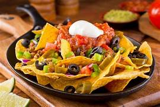

 Nachos are the ultimate architectural masterpiece of the snack world, a glorious heap of crunchy, salty tortilla chips that serve as a sturdy canvas for an explosion of flavors and textures. At their most fundamental, they are a study in contrast: the snap of a toasted corn chip meeting the velvety melt of cheese, whether it's a traditional sharp cheddar or a smooth, spicy queso blanco. But the true magic of nachos lies in the layers. When built correctly, every bite is a curated experience—spicy pickled jalapeños cutting through the richness of seasoned ground beef or black beans, while cool dollops of sour cream and zesty guacamole provide a refreshing counterpoint to the heat. Fresh Pico de Gallo adds a bright, acidic crunch, and perhaps a sprinkle of cilantro or a squeeze of lime brings everything into focus. Whether they are served as a humble late-night snack or a towering "trash can" stack at a bustling sports bar, nachos represent the pinnacle of communal dining. They are meant to be shared, fought over (for the "fully loaded" chip), and enjoyed with messy abandon, proving that sometimes the best meals aren't eaten with silverware, but with a sense of adventure and a stack of napkins nearby.